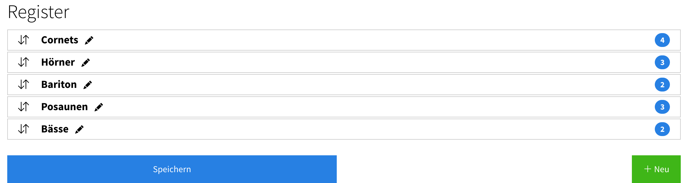
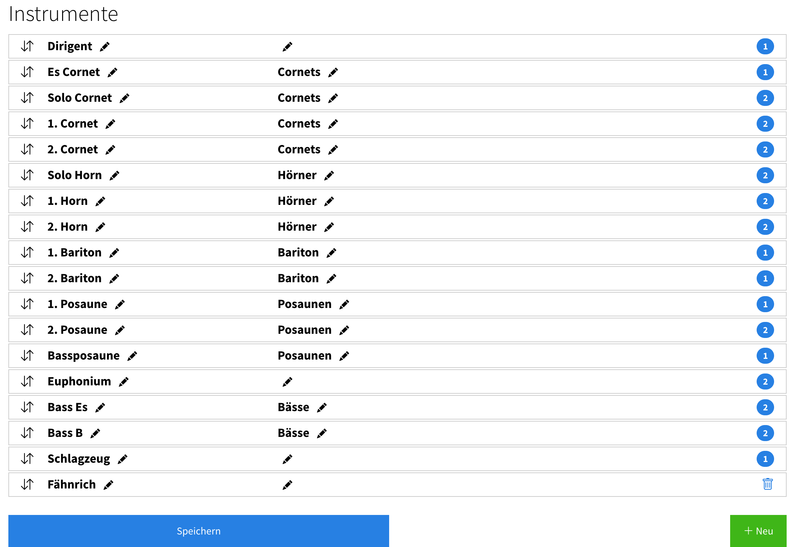

Register & Instrumente¶
Mit Registern und Instrumenten legst du fest, welche Instrumente es in deinem Verein gibt und wie sie gruppiert sind. Das sorgt für eine einheitliche Bezeichnung der Instrumente (statt dass jedes Mitglied seine Stimme frei eintippt) und bildet die Grundlage für eine sinnvolle Sortierung.
Auch ohne Notenverwaltung nützlich
Register & Instrumente stehen jedem Verein offen – unabhängig davon, ob die Notenverwaltung genutzt wird. Du findest sie im Menü unter «Verein» → «Register» bzw. «Verein» → «Instrumente». Bearbeiten dürfen sie Vereinsadmins.
Am besten gehst du in dieser Reihenfolge vor: zuerst die Register, dann die Instrumente (damit du jedes Instrument gleich dem passenden Register zuordnen kannst).
Register¶
Ein Register fasst verwandte Instrumente zusammen (z.B. «Klarinetten», «Trompeten», «Perkussion»).
- Lege die Register an und bringe sie in die gewünschte Reihenfolge.
- Diese Reihenfolge bestimmt später, wie Instrumente und Mitglieder gruppiert und sortiert werden.

Instrumente¶
Anschliessend legst du die einzelnen Instrumente an (z.B. Klarinette 1, Klarinette 2, Trompete 1, Trompete 2 usw.) und ordnest jedes einem Register zu.
- Jedes Mitglied erhält ein Instrument (im Profil bzw. beim Import). So ist überall dieselbe, einheitliche Bezeichnung in Gebrauch.

Was dir das bringt¶
- Einheitliche Bezeichnungen: Alle Mitglieder verwenden dieselben Instrumentnamen – keine Varianten wie «Klar 1» / «1. Klarinette» / «Bb Clar.» durcheinander.
- Sinnvolle Sortierung: Über die Reihenfolge der Register und Instrumente gibst du eine Sortierung vor. Damit lässt sich z.B. die Mitgliederliste sinnvoll nach Instrument ordnen (in Registerreihenfolge statt alphabetisch).
- Anzeige im Anwesenheitsplan: Auf Wunsch lassen sich die Instrumente im Anwesenheitsplan als Label bei den Mitgliedern anzeigen. Die Einstellung «Instrument für jede Person anzeigen» findest du unter «Verein» → «Plan» → «Bearbeiten».
- Grundlage für die Notenverwaltung: In der Notenverwaltung werden die Mitglieder anhand ihres Registers in der Zuteilungs-Matrix gruppiert – siehe Stimmen zuteilen.